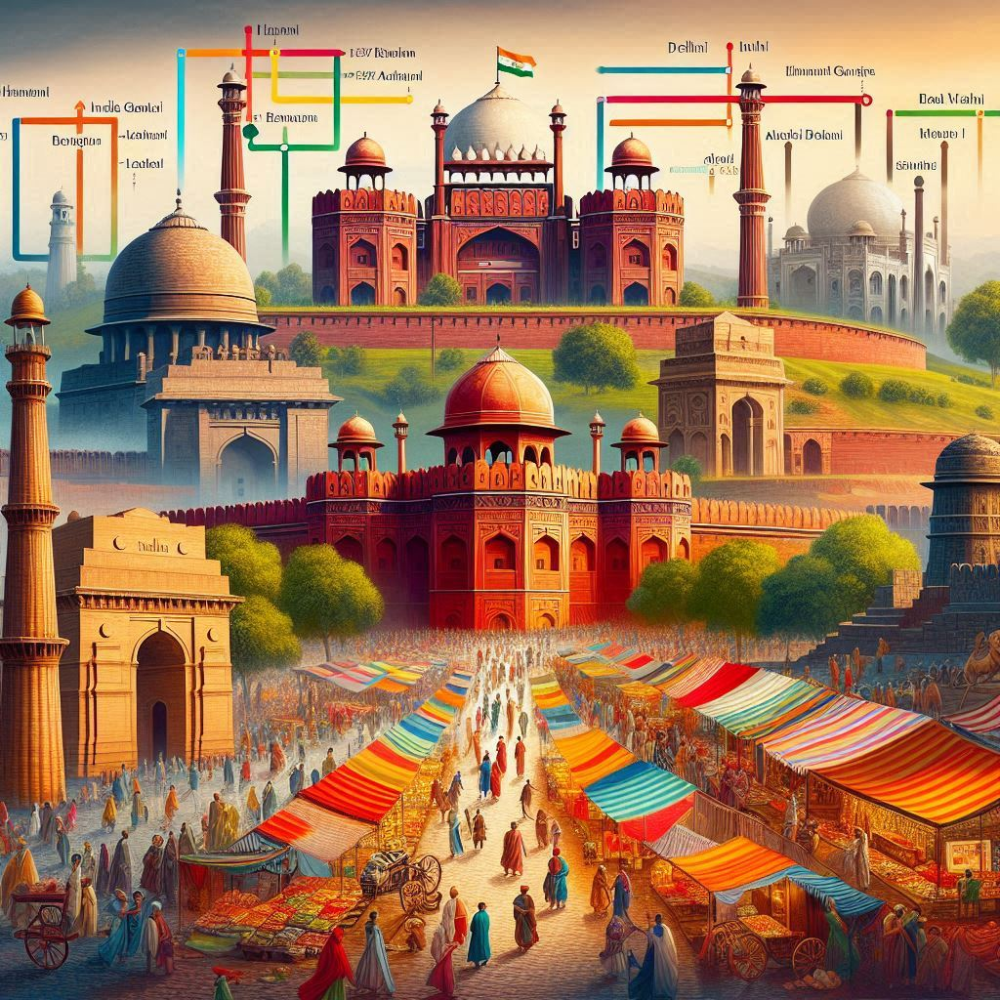
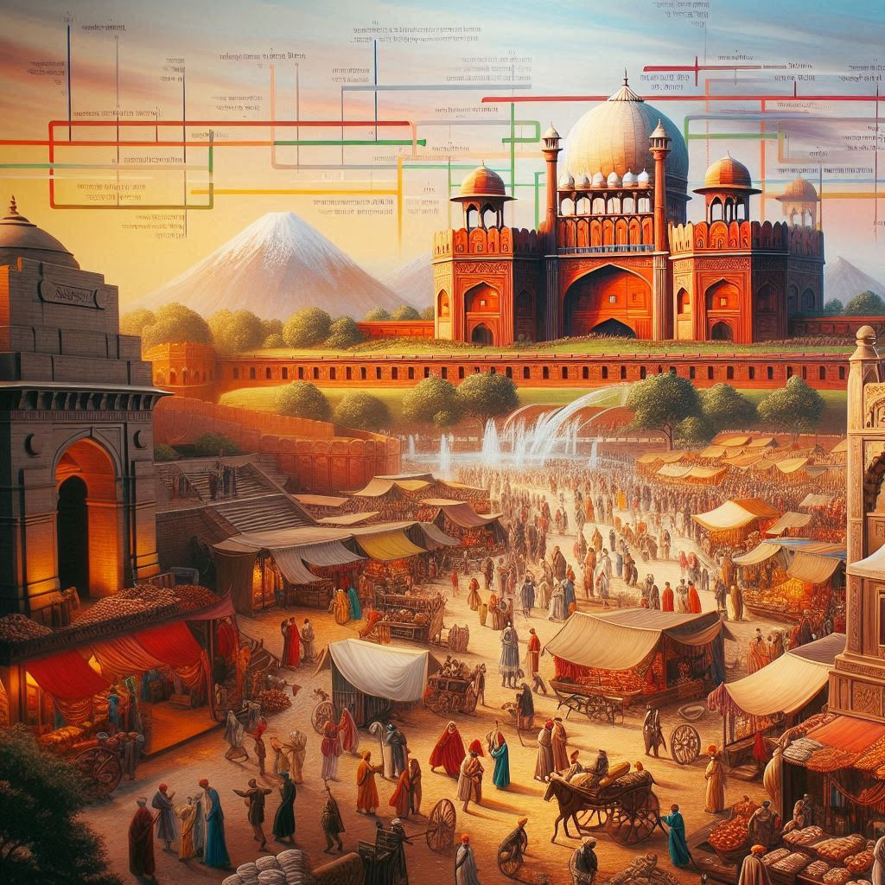

Delhi has a rich and complex history, shaped by various rulers, dynasties, and civilizations over thousands
of years. The city’s past reflects India’s cultural, political, and historical evolution. Here’s an overview
of the history of Delhi:
1. Ancient and Medieval Delhi
- Indraprastha (Mahabharata Era): According to ancient texts, the city of Indraprastha was believed to be founded by the Pandavas, the heroes of the Mahabharata.
- Mauryan Period (3rd Century BCE): Delhi came under the rule of the Maurya Empire, particularly during the reign of Ashoka, who built several Buddhist structures.
- Gupta Period (4th-6th Century CE): The region of Delhi continued to be a part of the Gupta Empire, known for cultural flourishing in art, science, and literature.
2. The Delhi Sultanate (1206–1526)
- Establishment of the Sultanate: Delhi became an important political center after Qutb-ud-Din Aibak, a former slave general, established the Delhi Sultanate in 1206.
- Architectural Developments: The Sultanate period saw construction of structures like the Qutb Minar and the Alai Darwaza.
- Cultural Influence: Persian influence merged with local traditions, witnessing the spread of Islam in India.
3. The Mughal Era (1526–1857)
- Babur and the Mughal Dynasty: The Mughal Empire, founded by Babur in 1526, saw Delhi prosper under Akbar, Jahangir, and Shah Jahan.
- Shah Jahanabad: Emperor Shah Jahan commissioned the Red Fort and the Jama Masjid, symbolizing Mughal power.
- Decline of the Mughals: Internal strife and foreign invasions led to the weakening of the Mughal Empire.


4. British Colonial Period (1857–1947)
- The British Raj: Post-1857, Delhi became central to the British Empire, with the capital shifting to New Delhi in 1911.
- Independence Movement: Delhi was pivotal in events like the Quit India Movement.
5. Post-Independence (1947–Present)
- Partition and Independence: In 1947, Delhi saw mass migration and became India’s capital after independence.
- Modern Delhi: Today, Delhi is a major political, economic, and cultural hub.
Conclusion
Delhi's history is a journey from ancient times through empires and colonial rule to its post-independence development as a global city. Its legacy is reflected in its monuments and vibrant culture.